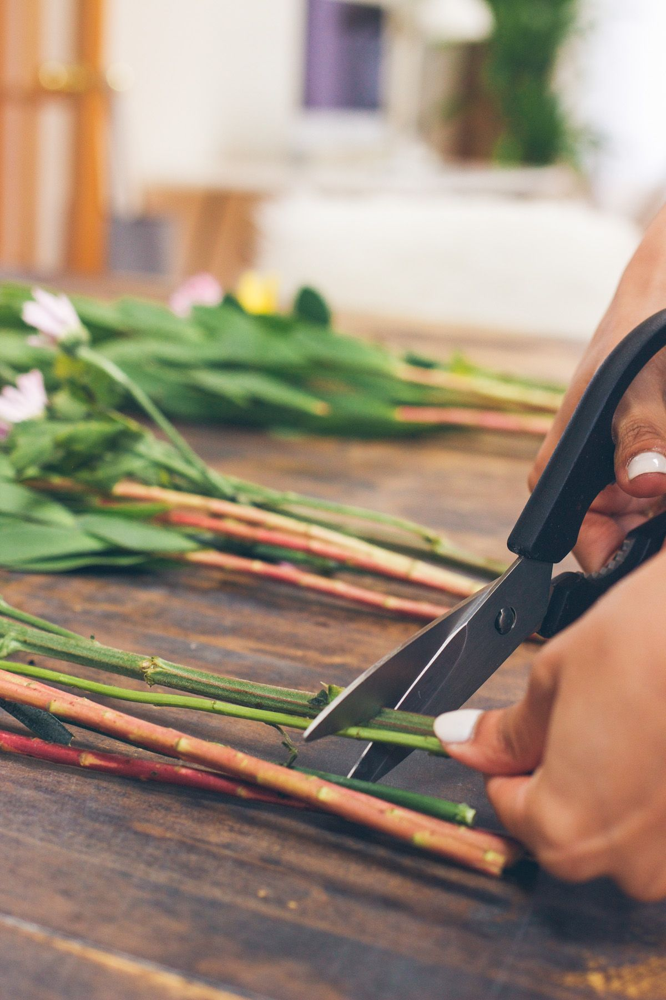
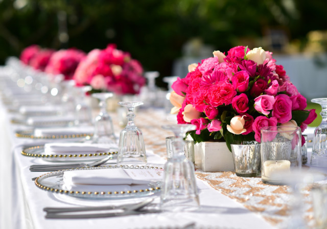

Most people accept wilting flowers as inevitable. Our florists don't. With the right technique — and one surprising kitchen ingredient — your bouquet can stay vibrant and beautiful for a full two weeks. Here is everything we teach our own staff.
1. The First 30 Minutes Matter Most
The moment flowers are cut from their source plant, they begin a race against dehydration. The first half hour after a bouquet arrives at your door is the most critical window for intervention. Do not leave them in paper wrapping on the counter while you find a vase. Act immediately.
The Arrival Protocol
Unwrap immediately. Fill a clean vase with fresh, cool (not cold) water. Add flower food if provided. Cut stems before placing — never skip this step. Only then should you arrange.
Temperature shock is real and devastating to flowers. Avoid placing fresh arrivals near air conditioning vents, heaters, or in direct sunlight. The ideal spot is a cool room away from fruit bowls — ethylene gas from ripening fruit accelerates flower ageing faster than almost anything else.
2. How to Cut Stems (Most People Get This Wrong)
This single technique difference accounts for more of a bouquet's lifespan than almost any other factor. Here is what professional florists do every single time:
-
1
Use a sharp, clean blade
A blunt knife or scissors crushes the stem's vascular tissue. This is like trying to drink through a flattened straw. A sharp, clean blade makes a precise cut that allows maximum water uptake.
-
2
Cut at a 45-degree angle
An angled cut increases the surface area exposed to water — sometimes by as much as 40% compared to a straight cut. It also prevents the stem sitting flat on the vase bottom, which blocks water flow.
-
3
Cut underwater if possible
Air bubbles enter the stem the instant it is cut in open air. Cutting underwater prevents this entirely. Fill a bowl, submerge the stem base, cut, then transfer immediately to your vase.
-
4
Remove 2–3 cm of stem every two days
Stem ends callous over and block water absorption. Recut regularly. This is the single most overlooked step by home recipients.

3. Water Secrets from the Flower Market
Professional florists are obsessed with water quality, and for good reason. The water in your vase isn't just hydration — it's the flower's entire life support system. Get it wrong and no amount of stem-cutting will save them.
Temperature
Cool water (around 15–20°C) is ideal for most cut flowers. The exception is bulb flowers like tulips and daffodils, which actually prefer slightly warmer water. Avoid ice-cold water for tropical varieties like birds of paradise or anthuriums — the cold can cause cell damage.
Cleanliness
Bacteria in the water blocks stems and causes premature wilting faster than almost anything else. Change the water completely every two days, and wash the vase with hot soapy water each time — not just a rinse. Biofilm builds up on glass invisibly and dramatically shortens flower life.
A clean vase is the most underrated tool in flower care. We wash ours with diluted bleach between every use. It makes a measurable difference.
— Meera Nair, Floral Care Specialist, Rose & Stem
4. The Kitchen Ingredient That Doubles Vase Life
We promised you a secret. Here it is: apple cider vinegar and sugar — a homemade flower food that rivals commercial preservatives in several independent tests.
Per litre of clean, lukewarm water: 2 tablespoons apple cider vinegar + 1 tablespoon white sugar + ¼ teaspoon household bleach. The vinegar lowers pH (flowers absorb acidic water better), sugar feeds the bloom, and bleach inhibits bacterial growth. Change every two days.
Other effective additives our florists have tested: a copper coin in the vase (natural antibacterial), a few drops of vodka (inhibits ethylene production), or a crushed aspirin dissolved in water (salicylic acid reduces bacterial growth). The vodka trick in particular is surprisingly effective for tulips and will keep them standing upright far longer than usual.
5. Flower-by-Flower Care Guide
Different species need different care. Here's our quick-reference guide for the most popular varieties we deliver:
- Roses — Cool water, daily stem recut, keep away from heat. Remove wilting outer petals immediately to redirect energy to inner blooms. Expected life: 10–14 days.
- Tulips — Keep in a cool, dark room initially. They continue growing after cutting — trim stems regularly. They prefer deep water. Expected life: 7–10 days.
- Peonies — Trim off the rubber-banded outer guard petals on arrival. They need warm water to open fully. Once open, move to a cooler spot. Expected life: 5–7 days.
- Lilies — Remove pollen-covered stamens immediately to avoid staining and to extend bloom life. Pollen also triggers faster ageing in nearby flowers. Expected life: 10–14 days.
- Sunflowers — Keep in very deep water — they drink heavily. Recut daily. Avoid cool rooms; they prefer warmth. Expected life: 6–9 days.
- Orchids — Mist with water rather than submerging. They prefer humidity over standing water. Expected life: 2–3 weeks (longest of all cut flowers).


6. The Overnight Revival Trick
If your flowers are looking droopy after a week — heads bending, stems soft — don't give up on them yet. This overnight revival method works remarkably well on roses, gerberas, and chrysanthemums in particular.
- 1
Fill a sink or large tub with cool water
You need enough to fully submerge the entire flower — stem, foliage, and bloom.
- 2
Submerge the flowers completely
Yes, including the petals. Lay them flat in the water. This allows every part of the plant to rehydrate simultaneously.
- 3
Leave for 1–4 hours (or overnight)
The flowers will often look entirely revived in the morning. Recut the stems before returning to a clean vase with fresh water.
7. The 5 Most Common Mistakes
- Placing flowers near fruit — Ethylene gas from ripening fruit kills flowers within days.
- Not removing submerged leaves — Any foliage below the waterline rots immediately and breeds bacteria.
- Using tap water without treatment — Chlorine and high pH in hard tap water stresses flowers. Let tap water sit for 30 minutes before use, or use filtered water.
- Keeping flowers in a warm room — Heat accelerates wilting. The coolest room in your home is always best.
- Never recutting stems — The single most neglected step. Set a reminder every two days.
With these techniques, a fresh Rose & Stem bouquet should stay vibrant and beautiful for a full 12–14 days. We've had customers report roses lasting 18 days with consistent daily care. That's not luck — it's method.

Comments (3)
The underwater cutting tip is a game-changer! I tried it this morning with the roses I received yesterday and they perked up noticeably. Also had no idea ethylene from fruit was such an issue — moved my vase away from the fruit bowl immediately.
Tried the apple cider vinegar + sugar formula last week and my roses are still going strong on day 11! Used to give up around day 5–6. This is genuinely impressive. Thank you Meera!
The overnight soak revival trick worked on my drooping gerberas — genuinely thought they were finished and they came back beautifully. Would love a full guide specifically for gerberas, they seem particularly fussy!
Leave a Comment
Your email will not be published. Required fields are marked *